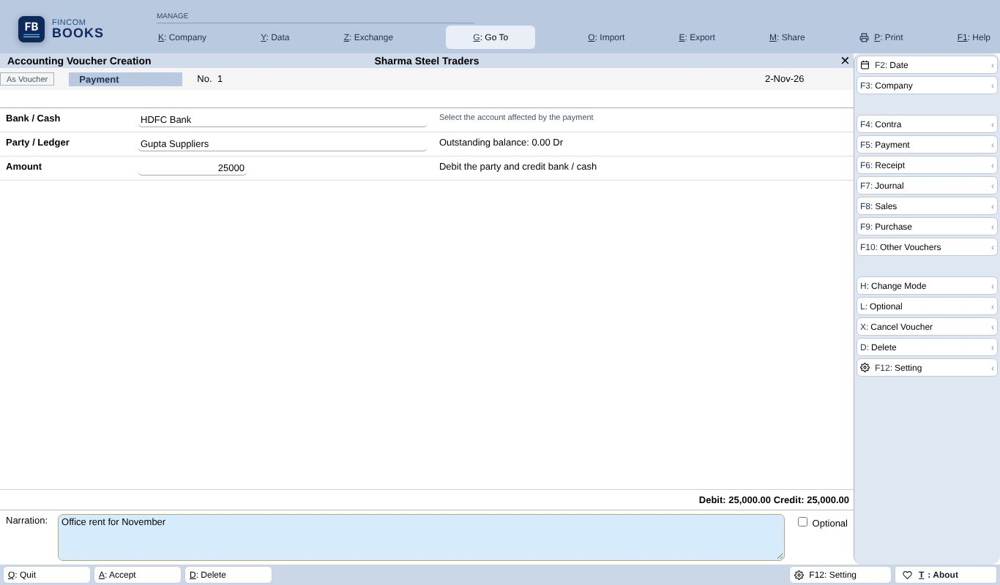

Keyboard-first accounting that runs anywhere
Post vouchers in seconds from the keyboard, file GSTR-1 and GSTR-3B, and keep stock. Free, works offline, and your books stay on your own computer.

What you can do today
Vouchers and masters
Contra, Payment, Receipt, Journal, Sales, Purchase, Credit and Debit Notes. Create a ledger inline with Alt+C, jump anywhere with Alt+G.
GST
CGST and SGST or IGST by place of supply. GSTR-1 (B2B, B2CL, B2CS, HSN) and GSTR-3B with JSON for the GST portal.
Inventory
Stock items, godowns, batches, weighted-average valuation, bill of materials and manufacturing.
Banking and bills
Bank reconciliation with clearing dates, bill-wise receivables and payables, credit limits.
Reports
Two-sided Balance Sheet and Profit & Loss A/c, Trial Balance, Day Book, ledgers, Stock Summary, ratios.
Your data, your formats
Import from Tally XML, bulk-load masters from Excel, back up to a file, and lock a company with a PIN.
Coming next
| Feature | Status |
|---|---|
| Audit trail (edit log) for companies | Next |
| TDS and TCS | Planned |
| e-Invoice (IRN) and e-Way Bill | Planned |
| Logins for multiple users | Planned |
| Cloud sync and access for your CA | Planned |
Install help
Browser
- Click Open in your browser. The first start takes a few seconds.
- Press Alt+K to create your company.
- Your books are saved in this browser on this computer. Take a backup from Alt+Y → Backup.
Windows
- Run FinComBooksSetup.exe.
- If Windows shows "Windows protected your PC", click More info, then Run anyway. The installer is not code-signed yet.
- Open FinCom Books from the desktop shortcut.
Mac
- Open FinComBooksSetup.dmg and drag FinCom Books to Applications.
- The first time, right-click the app and choose Open. On macOS 15, use System Settings → Privacy & Security → Open Anyway.
- Google Chrome or Microsoft Edge gives the best app window.
The browser version and the desktop apps keep separate books. Move a company between them with Backup and Restore.